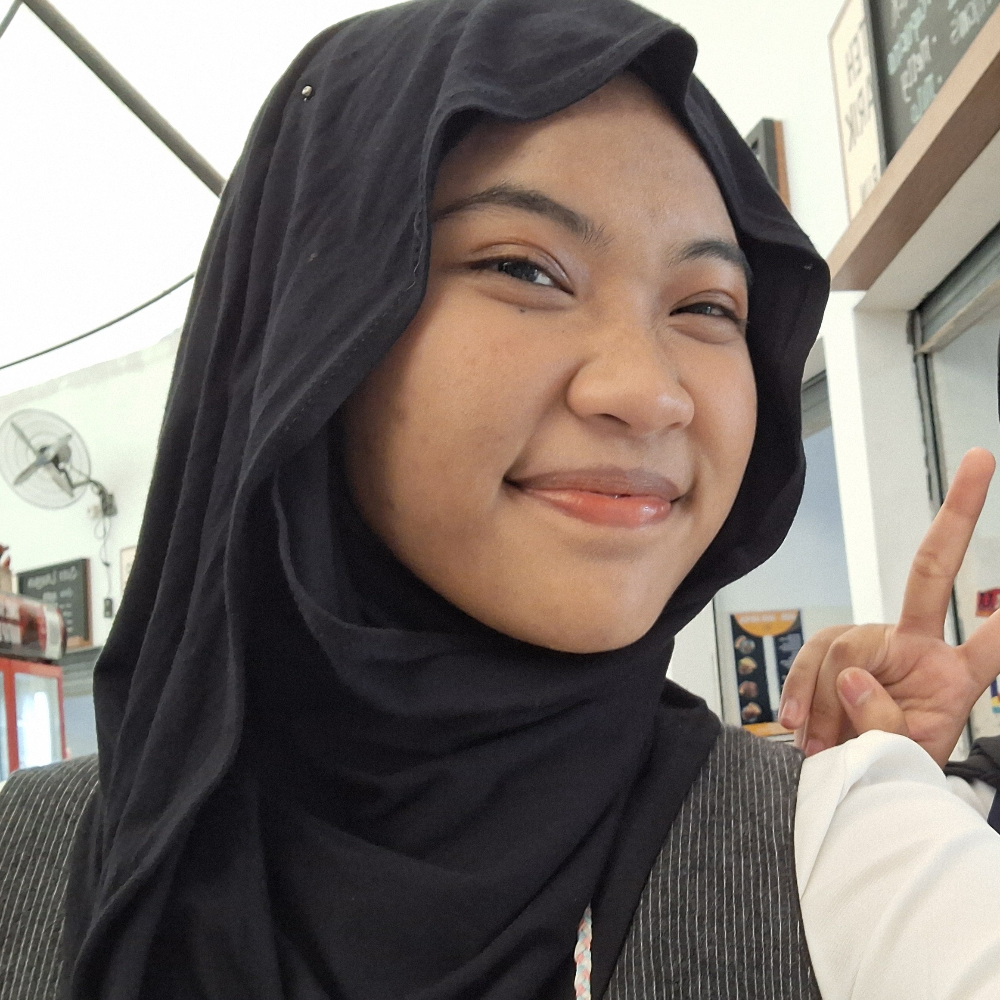
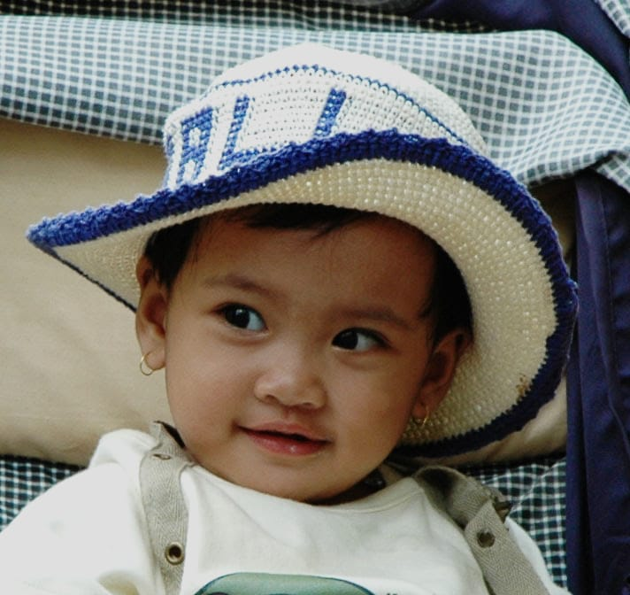

Salam kenal, namaku Ditiya! Aku berasal dari Jakarta dan saat ini sedang menempuh studi Ilmu Perpustakaan di Universitas Indonesia. Aku adalah orang yang bertanggung jawab dan professional atas pekerjaan yang aku tekuni. Aku juga merupakan pribadi yang totalitas terhadap hal-hal yang kusukai—ambisius, tapi tetap santai! Saat ini aku memiliki ketertarikan pada dunia pengelolaan informasi, terutama bagaimana informasi dapat dikelola, dikemas, dan ditampilkan secara menarik agar bisa dimanfaatkan oleh banyak orang.
Current interest/curiousity:
Funfacts:

